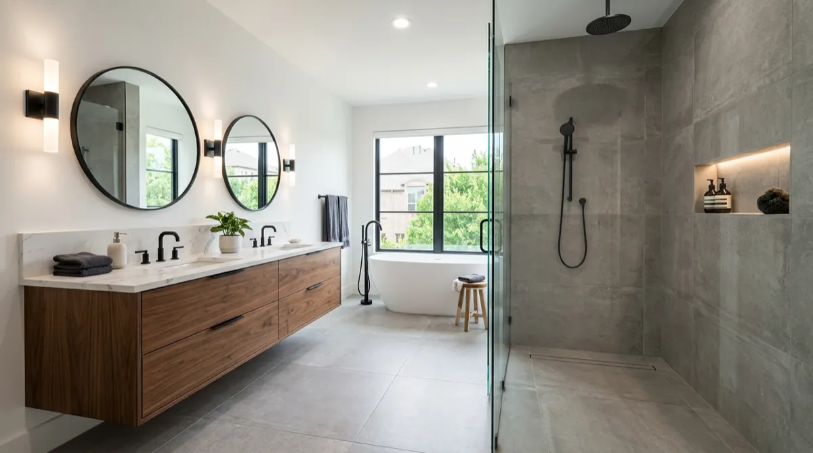

Plano Master Bath: Tub-to-Walk-in-Shower Conversion in 19 Days
Based on a recent Plano project · By Dillon Hubbard, OnPoint Pros · April 7, 2026

The Home
A West Plano home built in 2003. The clients were a couple in their early fifties — empty-nesters now, planning to stay in the house another decade or two. The master bath was untouched since the original build: a builder-grade Roman tub (which they hadn't used in eight years), a cramped 32-inch shower stall, a double vanity with cultured-marble tops, and a separate water closet that ate floor space.
The wife described it perfectly on the first call: "We use a 32-inch shower stall every single day in a master bath that has a giant tub we never touch. Something is wrong with this picture."
What They Wanted
- Get rid of the Roman tub. Replace with a real walk-in shower, ideally curbless.
- Replace the vanity with something that didn't look like 2003.
- Keep the freestanding tub option open for future resale, but as a smaller, modern soaking tub — not the giant Roman.
- Make the room feel like the rest of the house, which they'd been slowly modernizing for years.
The Plumbing Reality
The Roman tub sat against an exterior wall. The drain ran out through the slab. To convert to a walk-in shower with a linear drain, we needed to chip into the slab, reroute the drain to handle the new shower pan slope, and re-pour.
This is the work most "tub-to-shower" advertisers skip. They install over the existing drain and put a step-up curb that defeats the whole point of going curbless. We don't cut that corner. It added 2 days to the timeline. Worth it.
Materials
- Shower walls and floor: Large-format porcelain tile (24x48), running floor-to-ceiling. Fewer grout lines. Modern. Easy to clean.
- Waterproofing: Schluter Kerdi membrane. Non-negotiable.
- Linear drain: Stainless tile-insert linear drain at the back wall, 36 inches.
- Glass: Custom-cut frameless 3/8" tempered glass enclosure.
- Vanity: 72-inch double vanity in walnut with quartz top, plywood-box construction, soft-close drawers, undermount sinks.
- Fixtures: Brizo matte black throughout — shower system, vanity faucets, tub filler.
- Tub: Modern oval freestanding soaking tub in matte white. Smaller footprint than the original Roman.
- Floor: Same large-format porcelain as the shower for visual continuity.
The 19-Day Timeline
- Day 1–3: Demo. Roman tub out. Vanity out. Tile floor and walls out. Slab inspection.
- Day 4–6: Plumbing reroute through slab. Re-pour. Inspection.
- Day 7–8: Framing tweaks for shower opening. Electrical for new vanity lighting and exhaust fan.
- Day 9: Drywall and Schluter waterproofing membrane install.
- Day 10–13: Tile install. Shower walls, shower floor, room floor. Grout. Cure.
- Day 14–15: Vanity install, quartz template and install, faucet rough-in.
- Day 16: Glass shower enclosure measure (had to wait until tile was set).
- Day 17: Glass install (rush turnaround from local fabricator).
- Day 18: Final fixtures, freestanding tub install, paint, trim, lighting, exhaust fan.
- Day 19: Walkthrough, punch list, deep clean.
The Hard Part
Glass turnaround is always the unpredictable variable on bath remodels. The fabricator can't measure until the tile is set, and the lead time from measure to install is usually 5–10 days. We have a relationship with a local Plano glass shop that does rush jobs, and they turned this one in 24 hours. That's the only reason we hit 19 days instead of 23.
Outcome
The clients said the room "finally feels like a hotel instead of a leftover from the previous owner." The walk-in shower is now their favorite room in the house. The freestanding tub gets used a few times a month — exactly what they wanted.
We've since done two more bathrooms in the same Plano neighborhood from referrals on this one project.
What We'd Do the Same
- Slab plumbing reroute for true curbless. Worth the 2 days every time.
- Schluter waterproofing. The standard, every time.
- Large-format porcelain over mosaic. Easier to clean, modern look.
- Brand-name fixtures (Brizo). They look great and last.
What We'd Do Differently
- Pre-template the glass with the supplier the day tile starts setting, not the day it finishes. Could have shaved another day.
Want a Bathroom Like This?
Free on-site estimate. Written line-item quote. Same crew from demo to walkthrough.
Call (469) 238-1719